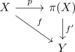

functor from top to the category of totally disconnected spaces is a left adjoint
Proposition
Given category Top and category of totally disconnected spaces, the functor from Top to the category of totally disconnected space is a left adjoint to the inclusion functor
Proof
Given $f: X \rightarrow Y$ and $g: \pi(X) \rightarrow Y$ we define
\begin{align*}
f': \pi(X) \rightarrow& Y \\
\pi(a) \mapsto& f(a)
\end{align*}
and
\begin{align*}
g': X \rightarrow& Y
x \mapsto& g \circ p(x)
\end{align*}
the former is a welldefined map, as $\pi(a)$ is connected as singleton and since $Y$ is totally disconnected, $f[\pi(a)]$ is a singleton. the latter is welldefined as composition of continuous maps.
Furthermore, by construction

commutes and by universal property of a quotient topology, $f': \pi(X) \rightarrow Y$ is continuous if and only if $f$ is continuous. Therefore $f'$ is a morphism